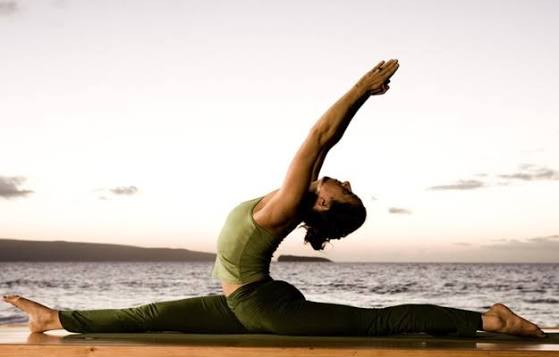
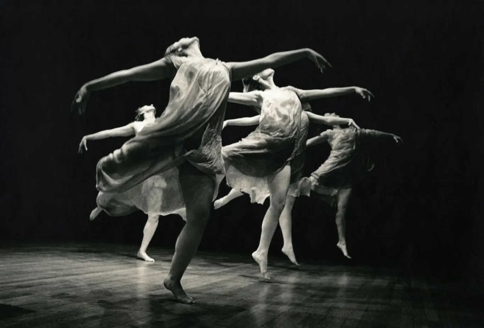
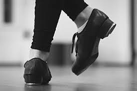
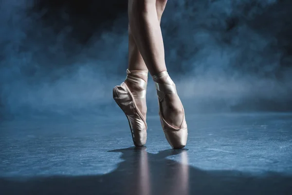
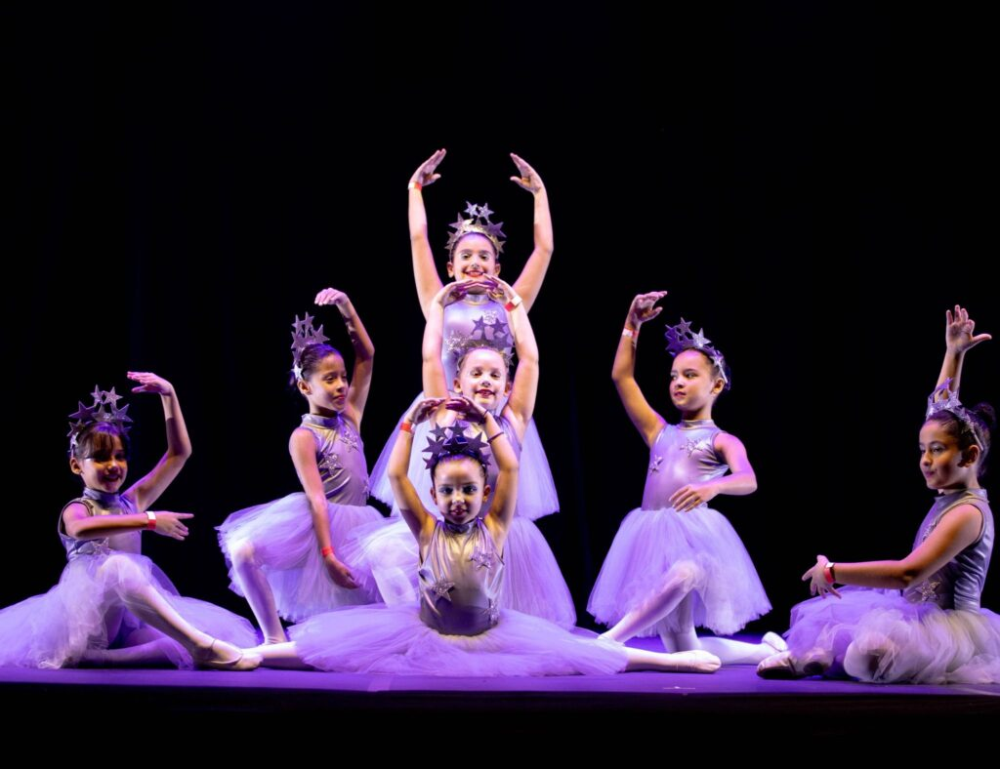
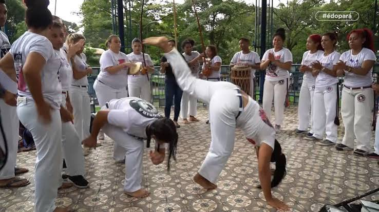
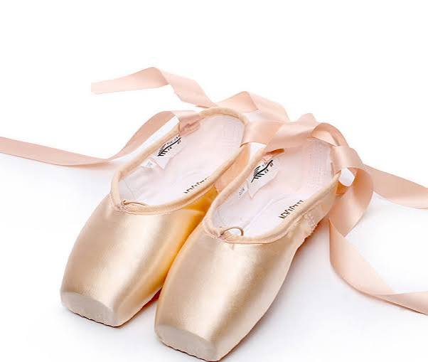
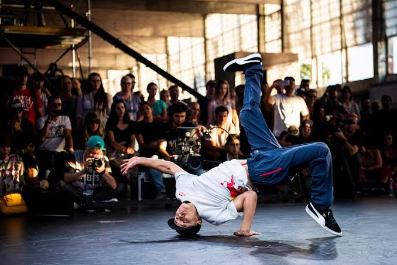
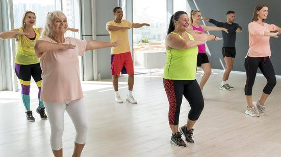

É preciso ter flexibilidade para começar a dançar
Mito! A flexibilidade é conquistada aos poucos com os treinos.

É preciso ter flexibilidade para começar a dançar
Mito! A flexibilidade é conquistada aos poucos com os treinos.

Dançar ajuda a melhorar a memória.
Verdade! Lembrar as sequências e coreografias estimula o cérebro.

O sapateado nasceu nos Estados Unidos.
Mito! Ele surgiu da mistura de ritmos da Irlanda e da África.

O Ballet Clássico surgiu na França.
Mito! Ele nasceu nas cortes da Itália e depois se popularizou na França.

Dançar queima tantas calorias quanto correr.
Verdade! Dependendo da intensidade, uma aula equivale a uma corrida.
Existe idade certa para aprender a dançar.
Mito! Qualquer pessoa, de qualquer idade, pode começar a dançar

A Capoeira já foi considerada crime no Brasil.
Verdade! Ela foi proibida por lei logo após a abolição da escravidão.

Bailarinos de ponta usam gesso nas sapatilhas.
Mito! A ponta é feita de camadas de tecido, papel e cola especial endurecida.

O Breakdance agora é uma modalidade olímpica.
Verdade! O estilo de dança urbana estreou oficialmente nos Jogos de Paris.

Dançar reduz os níveis de estresse.
Verdade! Os movimentos liberam endorfina e dopamina, os hormônios do bem-estar.